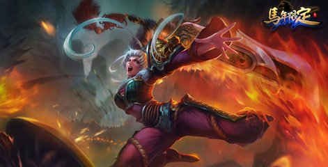
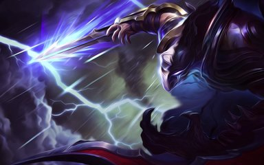

在诺克萨斯，只要你有实力，人人都有机会上位。这与种族、性别和社会地位无关。瑞雯对此深信不疑，努力奋斗期望出人头地。作为士兵时她就表现出不俗的潜力，虽然身材矮小却锻炼自己精通长剑的运用。她是残忍高效的战士，而力量源自内心坚定的信念。冲入战场时，瑞雯的内心从未动摇：不屑道德束缚，无惧死亡恐惧。因此瑞雯从同辈中脱颖而出，成为诺克萨斯精神的代表。她超乎寻常的狂热得到了最高指挥部的赞赏，瑞雯获得了一把用诺克萨斯魔法熔铸强化过的黑色符文之剑。这把武器比一般的轻盾更沉，完美契合瑞雯的喜好。很快，瑞雯被指派前往艾欧尼亚，成为诺克萨斯侵略战的一部分。
| 
200年来，劫是第一位解除上古封印，获取禁忌之力的忍者。他叛离了宗族与师门，抛弃了束缚自己的门派戒律与均衡之道。劫现在信奉黑暗知识，杀戮拒绝皈依的顽固之人。 劫是一名孤儿，被一位忍者大师收留，并接受忍者训练。只有一名学徒在训练中能与劫相抗衡 - 慎，忍者大师之子。劫与慎的对抗总是平局收场，也因此始终无法赢得师父的另眼相看。在沮丧与嫉妒的双重驱使下，劫开始寻求其他力量。年轻的劫潜入宗族神庙的封印之处，在那里他发现了一个神秘华丽的预言箱。劫能感受到盒子里的黑暗知识，过去经受的训练告诉他不能打开这个封印，尽管如此，他还是无法移开目光，凝视着封印。在这瞬间，暗影之力触碰了劫的意识，向他揭示了隐藏已久的秘技。手握秘密武器的劫再次向慎挑战，这一次他获取了胜利。满心骄傲的劫期待能获得青睐，但不知为何师父发现了劫使用禁术的事实。从此，劫被师门放逐。 |